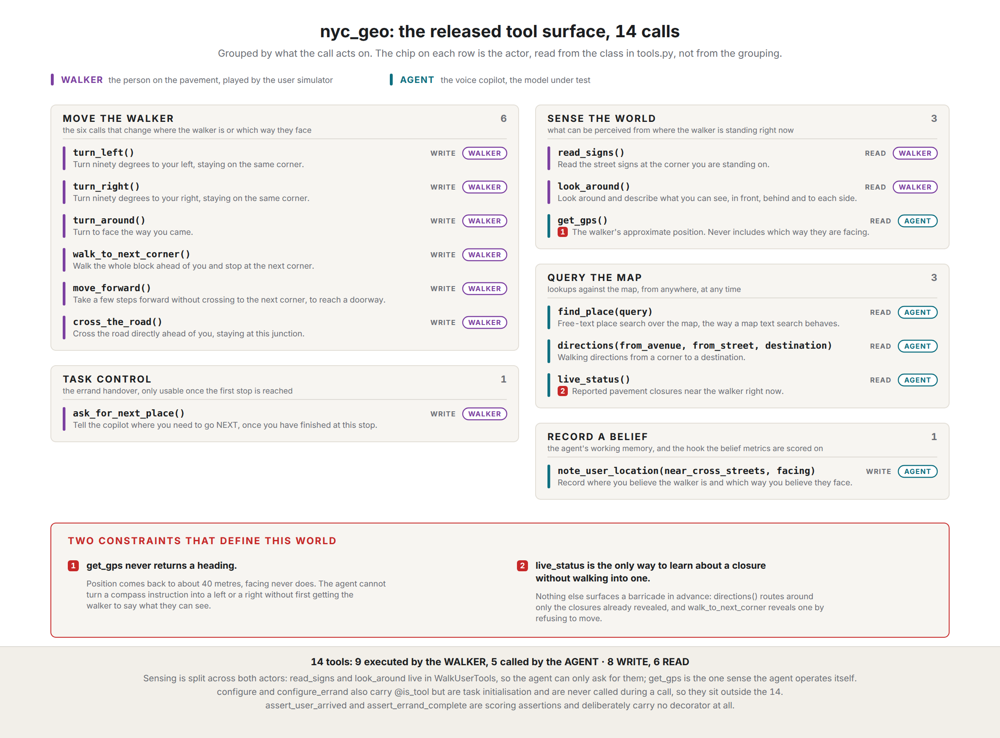
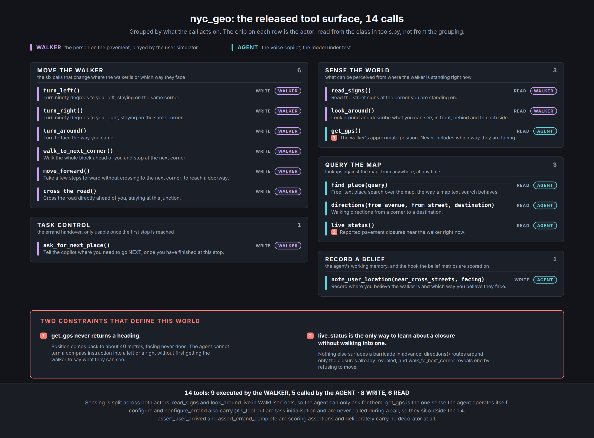
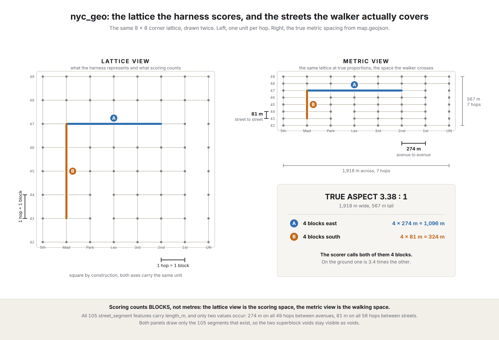
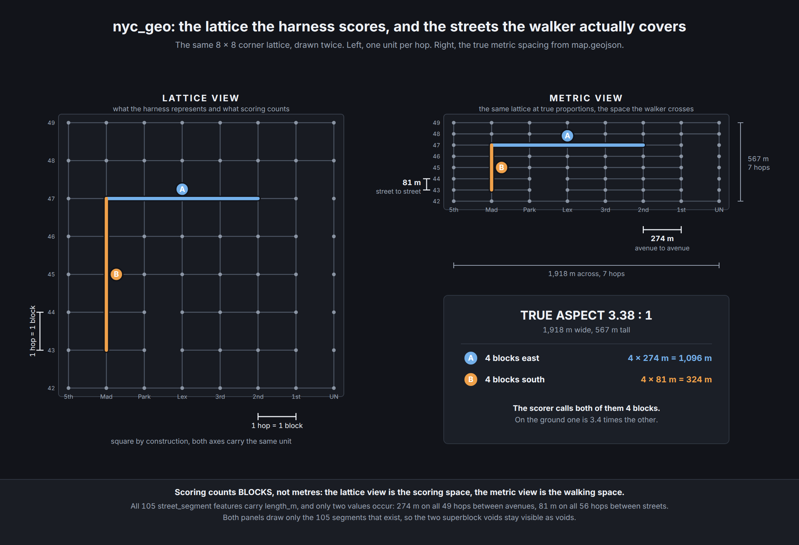
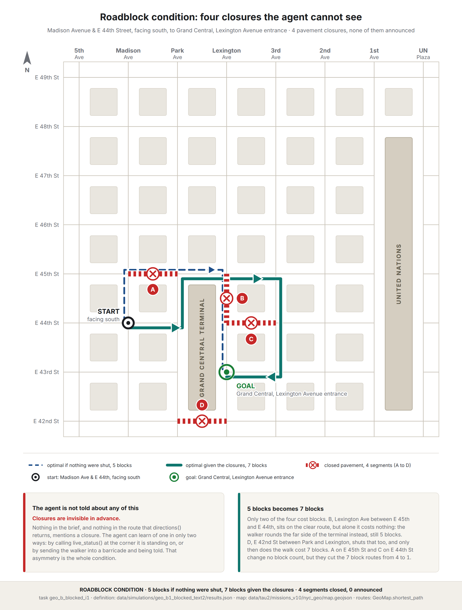
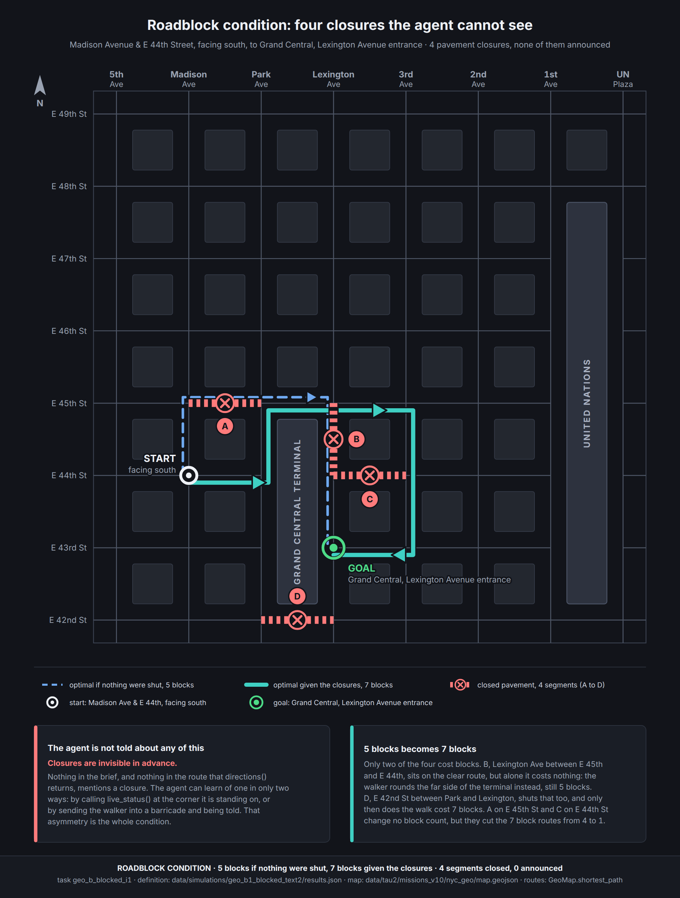
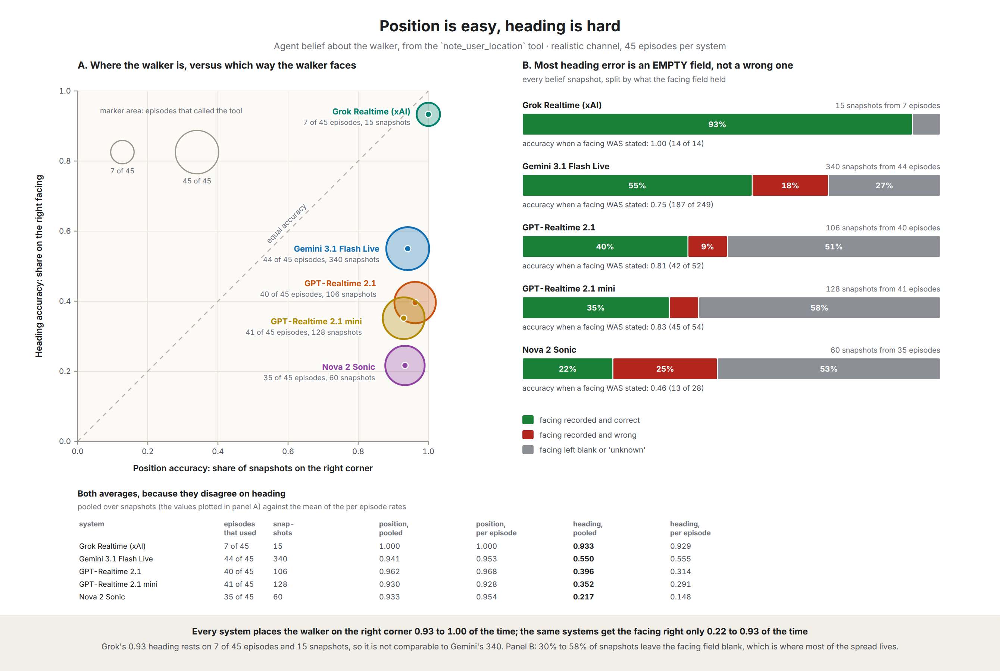
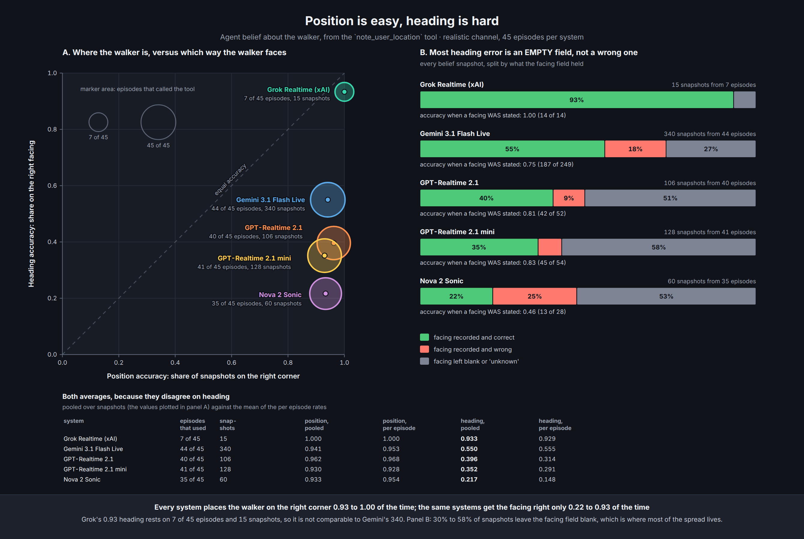
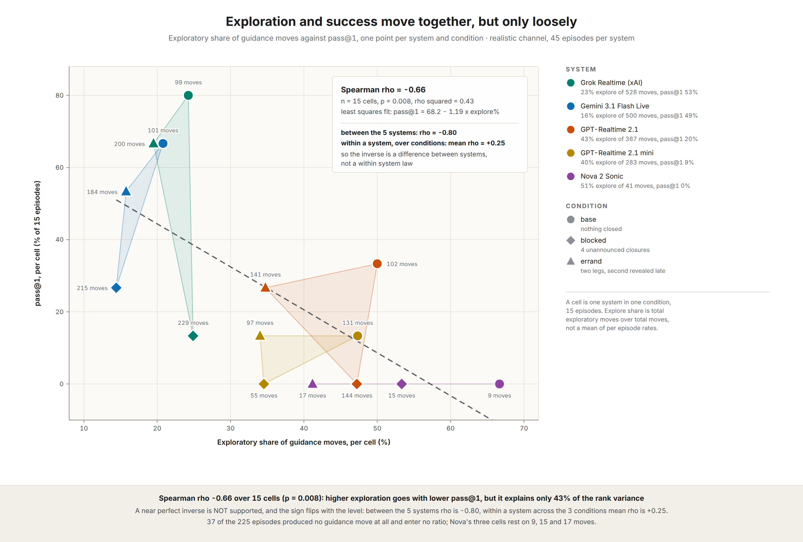
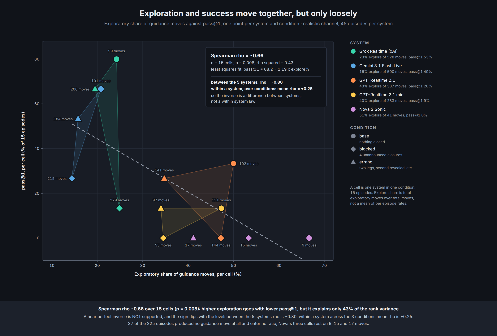

Full-duplex voice benchmark
A voice copilot holds the map. A pedestrian holds the street. Neither can finish alone, so every block walked is a spoken instruction that survived a phone line.
225 scored conversations · 5 production voice models · collected 2026-07-28 to 2026-08-04
Overview
A spoken copilot must guide a pedestrian who cannot see a map to a destination in Midtown East. The copilot can query a real GeoJSON map and cannot see the street; the walker can see the street and has no map. The channel is full duplex telephony, so both parties speak whenever they like and neither waits its turn. Because the copilot's only self-operated sense returns position and never orientation, the task isolates something a text agent never faces: maintaining a shared model of an unseen physical situation, in real time, over a lossy channel.
The world
The map is a single GeoJSON FeatureCollection, the same interchange format a real
mapping stack consumes: 105 blocks of pavement, 240 buildings, 31 named places, 5 named entrances,
4 corners with a missing crosswalk, and 2 superblocks. Grand Central Terminal and the United Nations
are where they really are, and both are impassable. Landmarks are real so the walker can plausibly
see them; ordinary destinations are authored, so success depends on reading the map rather than on
a model's memory of Manhattan.
The design decision everything turns on. get_gps returns a position and never
a heading. A copilot can know the walker stands at Park and E 45th and still not know whether "turn
left" sends them north or south.
Position can be looked up. Orientation has to be inferred from what the walker says. The models separate on exactly the quantity that cannot be queried.
The tool surface is split by hand, and the split is asymmetric. The walker holds nine tools, including both ways of perceiving the street. The copilot holds five. It cannot look around or read a sign; it can only ask, and then parse the answer off a degraded line.


live_status() is the only
way to learn about a closure without walking into one.Manhattan blocks are not square. Crosstown, avenue to avenue, is 274 m; uptown, street to street, is 81 m, a true aspect ratio of 3.38 to 1. Scoring counts blocks because the block is the instruction unit, so a four-block crosstown leg and a four-block uptown leg score identically and differ by 3.4x on the ground.


Task families
Nine scenarios, three per family, five runs each. The number on each card is the optimal walk in blocks.
One destination, clear map. Establish where the walker is and which way they face, then say five correct things in sequence. Four distinct five-block routes exist; what the terminal forces is the crossing, not the shape.
Four pavement closures, none announced. Five blocks becomes seven. The copilot's map is correct about geometry and wrong about passability, so the plan has to be repaired mid-walk.
Two legs. The second destination does not exist in the brief and is revealed only on arrival at the first, so a copilot that has just declared success must re-plan from a new position.


Worked examples
Unedited recordings from the campaign, both sides mixed, at the 8 kHz telephony quality the models heard. Transcript timings are from the recorded tick stream.
70-second clip from 2:40, the moment the walk fails and is repaired.
The full call. It repairs twice and still walks 19 blocks for a 7-block job, because it discovers closures by hitting them rather than by checking first. Recovery is not the same as competence.
The walker reaches Grand Central Market, then reveals they also need the United Nations visitor entrance. The copilot re-plans from the new position and walks the second leg at exactly optimal length.
The same task as a five-block walk. The copilot sends the walker west to 5th Avenue and back twice inside two minutes running the same guess-and-check test, and returns to Madison and E 43rd six times. It never sends them anywhere wrong. It simply never converges. This is what the benchmark's failures sound like.
Results
Realistic channel, 45 conversations per model. Arrived is the graded goal check. pass@1 additionally requires route efficiency at or above 0.75. Intervals are 95 percent Wilson score.
| model | arrived | pass@1 | explore % | hit the cap |
|---|---|---|---|---|
| Gemini 3.1 Flash Live | 0.978 [0.88, 1.00] | 0.489 [0.35, 0.63] | 16.2 | 4% |
| Grok Voice | 0.867 [0.74, 0.94] | 0.533 [0.39, 0.67] | 22.7 | 33% |
| GPT-Realtime 2.1 | 0.400 [0.27, 0.55] | 0.200 [0.11, 0.34] | 43.4 | 58% |
| GPT-Realtime 2.1 mini | 0.311 [0.19, 0.46] | 0.089 [0.03, 0.21] | 40.3 | 82% |
| Nova 2 Sonic | 0.000 [0.00, 0.08] | 0.000 [0.00, 0.08] | 51.2 | 91% |
Ranking on pass@1 is unchanged at every efficiency threshold from 0.5 to 1.0, so no conclusion depends on where that line sits. It sets the level, not the order.
Findings
110 of the 225 conversations did not reach the destination. 104 of those, 95 percent, were still walking when the twenty-minute simulated clock stopped. Six went to the wrong place.
Every zero in the results table is therefore a lower bound. A zero means "did not finish in twenty minutes", not "went the wrong way". The binding constraint on a voice copilot is how quickly it can establish and hold a shared picture, not whether it can read a map.
The copilot can record what it believes about the walker, and every belief is scored against ground truth, which makes the internal model measurable rather than inferred.


Most of that gap is silence, not error. Between 27 and 58 percent of recorded beliefs leave the facing field blank. Conditional on committing to a direction, four of the five models are right 75 to 100 percent of the time. What separates them is whether they track orientation at all, not whether they can. Nova is the exception and fails differently: when it does commit it is right 46 percent of the time, close to chance on a four-way choice.


A copilot that has lost track of the walker cannot say "turn left and walk one block", so it says "try heading that way and tell me what you see". Across models the relationship is real and moderate, Spearman rho -0.66 at p = 0.008.
It does not hold inside a model. Across a single model's three conditions the correlation turns positive. Harder tasks do not push a copilot into more guessing; they push it into stalling. Exploration tells you which model you are looking at, not which task.
Scope and honesty
directions() mis-resolves the
long-horizon destination by two blocks in all three of those scenarios, so part of that
condition's failure is ours rather than the model's.User simulator gpt-5.6-luna at temperature 0, decision model
claude-haiku-4.5, and the five voice agents as the only variable. A 200 ms discrete
tick loop with simulated time decoupled from wall clock; both parties emit every tick, so
interruptions and overlaps arise from the channel rather than from a script. Audio is G.711 mu-law
at 8 kHz for every model, so no model receives better input than another.
@misc{navvoice2026,
title = {Talking someone through a city they cannot see:
a full-duplex voice navigation benchmark},
note = {Navigation world of a six-world voice agent benchmark},
year = {2026}
}